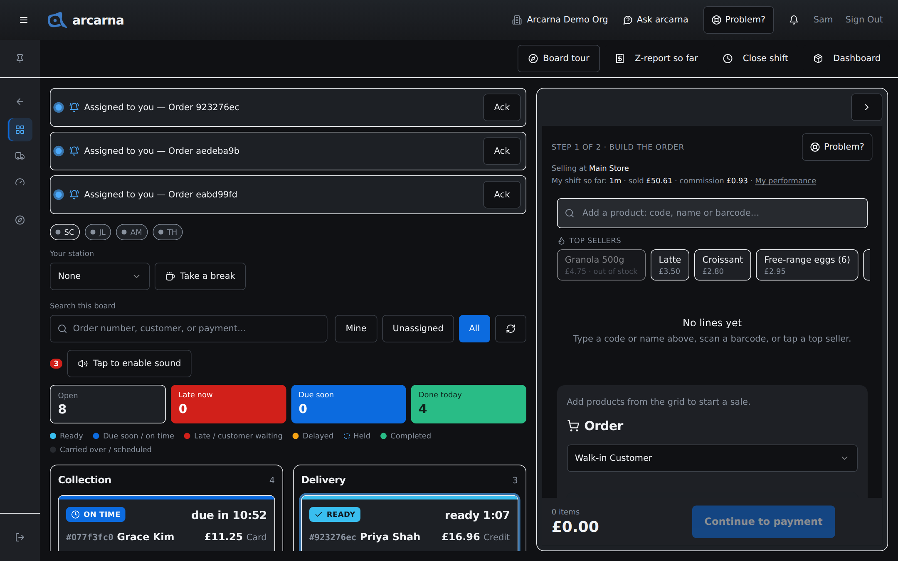
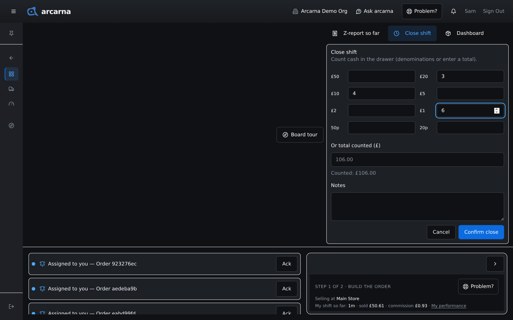
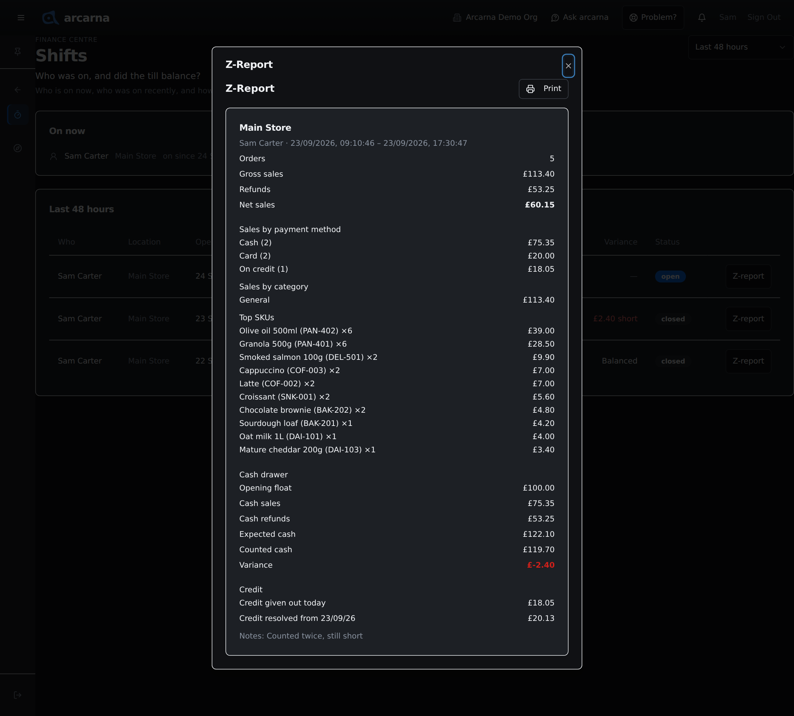
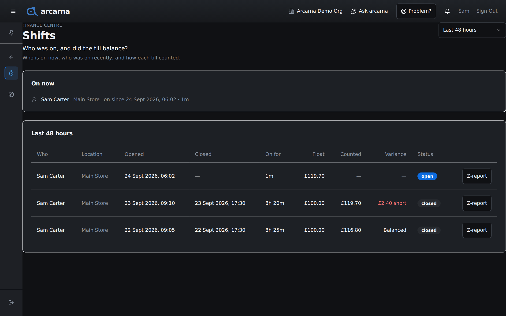
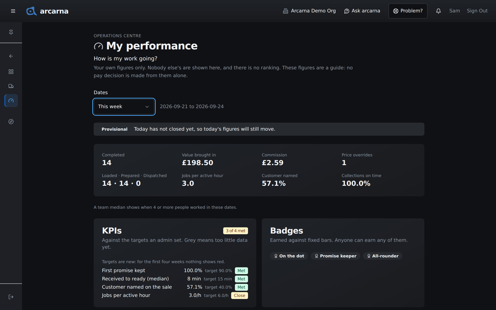

Staff training manual
Staff training manual
A shift records who was on the till and whether the cash added up. This section covers how a shift starts, how to see where you are up to, how to count the drawer and close, and what the Z-report tells you.
The idea · why shifts exist
What a shift is, and why it matters
A shift is a record of one person serving at one location. It answers two plain questions the business asks every day: who was on, and did the till balance?
At the start of a shift the drawer holds a known amount of cash, the opening float. During the shift, cash sales go in and cash refunds come out, so arcarna knows how much cash should be in the drawer. At the end you count the drawer and enter what is actually there. The difference is the variance. A shift that balances has a variance of zero.
This is a job for both roles: a CASHIER counts and closes their own shift; a MANAGER reviews the team's shifts afterwards and follows up anything that did not balance.
| Term | What it means |
|---|---|
| Trading day | 6am to 6am, in the shop's own time. A sale at one in the morning belongs to the day before, because that is when the shop was working. |
| Opening float | The cash in the drawer when your shift starts. arcarna carries it over from the cash counted at the last close at that location, because the drawer is not emptied between shifts. If nothing has been counted there before, it starts at £0.00. |
| Expected cash | What the drawer should hold now: opening float, plus cash sales, minus cash refunds, plus any cash paid off customers' tabs. |
| Counted cash | The cash you actually count in the drawer when you close. |
| Variance | Counted cash minus expected cash. Zero means it balanced. A signed number (for example −£3.50) means the drawer was short or over. |
| Z-report | The summary of everything in one shift: sales, refunds and the cash drawer. Covered below. |
At the till · starting
Your shift starts itself CASHIER
There is nothing to open. Your shift begins with the first order you take, and every sale you make is tied to your name automatically. You do not choose a cashier code, pick a location or press a start button: both come from your own account.
A shift belongs to the trading day, not to a sitting at the till. If you sign out for lunch, or go home and come back later the same day, you return to the same shift. Several people can serve at once; each has their own shift, and every order records who took it.
During the shift · where you are up to
My shift so far CASHIER
You never have to close anything to see how the day is going. On the Operations board, under Selling at and your location's name, a line reads My shift so far: how long you have been on, what you have sold and the commission you have earned. If you have changed any prices at the till, it also shows your count of price overrides. The line links to My performance, described at the end of this section.
The line only appears once you have a shift running, and only in shops that track cashier commission.

Z-report so far
For the full picture, select Z-report so far at the top of the Operations board. A panel opens headed Your shift so far, showing everything you have taken since the shift began. It says plainly that the shift is still running and gives the time the figures were worked out. Counted cash reads Not counted yet and the variance reads Pending the count, because nobody has counted the drawer. Nothing is closed by looking. Select Close to put it away.
At the till · cashing up
Counting the drawer and closing your shift CASHIER
Closing a shift is how the till is balanced. Do it when you cash up, before you hand the drawer over or go home.
- On the Operations board, select Close shift. The button only appears once your shift has started.
- A panel headed Close shift asks you to count the cash in the drawer. Enter how many of each note and coin you have, from £50 down to 20p; arcarna adds them up for you.
- Or type the whole amount under Or total counted (£). Use this if you have 10p, 5p, 2p or 1p coins to include. A total typed here replaces the count by notes and coins.
- Check the line Counted: £… matches what you counted. Add anything worth knowing under Notes, for example "£20 taken out for change at 4pm".
- Select Confirm close. arcarna works out the expected cash and the variance, and shows the shift's final Z-report.
- Read it, then select Done. The shift is finished and recorded.
If you serve again after closing, the next sale starts a new shift, with the cash you just counted as its opening float.

Evidence · the Z-report
The Z-report
Every shift has a Z-report: the single page that says what happened in that shift. It is the evidence behind the takings: sales totalled, refunds taken off, and the cash drawer reconciled from opening float to variance. Check it whenever a till does not balance.

What it shows
| Part | What it tells you |
|---|---|
| Header | The location, the person who was on, and when the shift opened and closed. |
| Orders · Gross sales · Refunds · Net sales | How many orders were taken, the sales total, refunds given, and net sales (gross minus refunds). Discounts given shows how much was knocked off list prices; it is already included in the sales above. |
| Sales by payment method | Takings split by how customers paid (cash, card, Card (link), credit and so on), with a count of orders for each. A split sale counts each part under its own method. |
| Sales by category | Which kinds of product sold, by value. |
| Top SKUs | The best-selling individual products in the shift, with quantity and revenue. |
| Cash drawer | The reconciliation: opening float, cash sales, cash refunds, cash tab repayments (when there are any), expected cash, counted cash and the variance. A variance that is not zero is shown in red so it stands out. |
| Awaiting card payment (link) | Card (link) sales the customer has not yet paid on their phone. They are in no takings figure until Stripe confirms the payment. |
| Credit given out today | Sales made on credit (tick) during this shift. The goods have gone and the sale is counted, but no money came in, which is usually why the drawer holds less than the day's sales suggest. |
| Credit resolved from dd/mm/yy | Money that came in during this shift against a credit sale made on an earlier day, one line per day being settled. It does not add to the day's sales, because that sale was counted when it was made. |
| Notes | Anything written when the shift was closed. |
Select Print at the top of any Z-report to print it or keep a copy for the day's paperwork.
Finance Centre · Shifts
The Shifts page
The Shifts page (Finance Centre) answers the same two questions: who was on, and did each till balance? A CASHIER sees only their own shifts here. A MANAGER sees their cashiers' shifts and their own. Admins and the owner see everyone's.
- Open the menu, choose Finance Centre, then Shifts.
- On now at the top lists every shift still open, with who, where and how long they have been on. If nobody is serving it reads Nobody is on. No till is open.
- Below it is the list of recent shifts. It shows the last 48 hours to start with; use the box at the top right to choose Last 24 hours, Last 48 hours or Last 7 days.
- Select Z-report on any row to open that shift's Z-report.

| Column | What it tells you |
|---|---|
| Who and Location | The person on the shift and where. |
| Opened, Closed and On for | When the shift started and ended, and how long it ran. An open shift has no closing time yet. |
| Float | The opening float the drawer started with. |
| Counted | The cash counted at close. |
| Variance | Balanced, or how much the drawer was short or over. A dash (—) means the shift has not been counted yet. |
| Status | open, closed, or reopened if a manager reopened it. |
Back office · managing shifts
Closing or reopening someone else's shift MANAGER
Sometimes a cashier goes home without counting, or closes with the wrong figure. Managers can put that right from the Shifts page. The ⋮ button at the end of a row holds the actions that fit that shift. You can act on your cashiers' shifts and your own; admins can act on anyone's.
Closing a shift on someone's behalf
- Count the drawer yourself.
- On the open shift's row, select ⋮, then Close shift…
- Enter the amount under Counted cash.
- Under Notes (optional), say why you are closing it for them.
- Select Close shift. The variance is worked out exactly as if the cashier had closed it.
Reopening a closed shift
- On the closed shift's row, select ⋮, then Reopen shift…
- Give a Reason. It is required, and it is kept, because a Z-report for that shift may already have been printed.
- Select Reopen shift. The count and variance are cleared and the status reads reopened. Close it again with the right count.
The 6am close and its Signals
Each morning, shortly after 6am, arcarna closes the previous trading day. It totals the day, ends everyone's shift for commission and pay, and sends managers a Signal headed Trading day closed with the date: orders and takings, cash and card, credit given out and resolved, personal use, commission earned, and any orders still open from that day.
If any drawer was left open, a second Signal says how many, for example 1 drawer not counted. arcarna never closes a drawer for you. Go to the Shifts page, count the drawer, and close it with Close shift….
Finance Centre · Rota
The Rota
The Rota page (Finance Centre, next to Shifts) is a 14-day forward view of who is working, built from each person's recurring weekly pattern plus any one-off cover, swap or approved day off. It is separate from the Shifts page: Shifts records what actually happened at the till; the Rota records what is planned. Everyone — CASHIER, MANAGER and admin — can open it and see the whole team's grid, not just their own row.
- Open the menu, choose Finance Centre, then Rota.
- The grid runs 14 days forward from the date box at the top. Each row is one person; each column is one day. A cell reads the shift's hours, Off, or a dash for a day nobody has said anything about yet.
- A day with more than one shift for the same person — a split shift, or an overnight shift plus a separate evening one — shows both, stacked in the cell.

Requesting a day off CASHIER
Select Request time off at the top of the Rota page, give the dates and, if you like, a reason, then send it. It goes to your manager as pending. You can cancel your own request while it is still pending; once it is decided, you cannot.
Recurring patterns and busy-times overlay MANAGER
Only a manager or admin can set a recurring pattern, add a one-off cover or swap, or decide a time-off request — the grid itself is open to everyone, but changing it is not.
- Select Add recurring pattern, choose the staff member, the day of the week, a start and end time, and the date it starts from. It repeats every week until you remove it or give it an end date.
- To cover a one-off absence or swap a shift, select the cell for that person and date, choose Working or Off and, if working, the hours, then save. This never changes the recurring pattern underneath — it just overrides that one date.
- Pending time-off requests sit in a card at the top of the page. Approve writes an Off entry on every date in the request automatically; Decline leaves the pattern as it was.
Behind the grid's day headers, a manager or admin sees a faint shading — busier days shade darker, using the shop's own sales-by-hour figures (the same data behind Busiest Hours in Truths). It is there to help judge whether a quiet Tuesday needs one person on, or a Friday needs three.
Printing the rota
Print / PDF, at the top of the page, prints just the grid — no menus, no buttons. Use your browser's own print dialog to print it on paper, or choose Save as PDF (or your device's equivalent) to keep or share a copy.
Operations Centre · My performance
My performance
My performance (Operations Centre) shows how your own work is going, for any dates you choose. It is yours alone: nobody else's figures are shown and there is no ranking. The figures are a guide; no pay decision is made from them alone. Everyone has this page, whatever their role.
- Open the menu, choose Operations Centre, then My performance. You can also use the My performance link on the My shift so far line.
- Under Dates, choose Today, Yesterday, This week, Last week, Last 4 weeks or This month.

| Part | What it tells you |
|---|---|
| The figures | Orders you completed, the value you brought in, your commission, your price overrides, how many orders you loaded (keyed in), prepared and dispatched, jobs per active hour, how often a customer was named on your sales, and how often your collections were ready on time. When four or more people worked in the dates you chose, a team median sits under each figure for comparison. |
| Provisional | Shown when your dates include today. Today has not closed yet, so today's figures will still move. |
| Targets (the card headed KPIs) | How you are doing against the targets an admin set. Grey means there is too little data yet. |
| Badges | Earned against fixed bars. Anyone can earn any of them. |
| Speed and Fairness | How quickly your orders moved, and your figures per active hour, so part-time and full-time staff compare fairly. |
| Last week's digest | A short summary of last week: orders completed, value brought in, targets met and badges, with your commission. Managers also see a line for each of their cashiers; admins see managers and cashiers. |